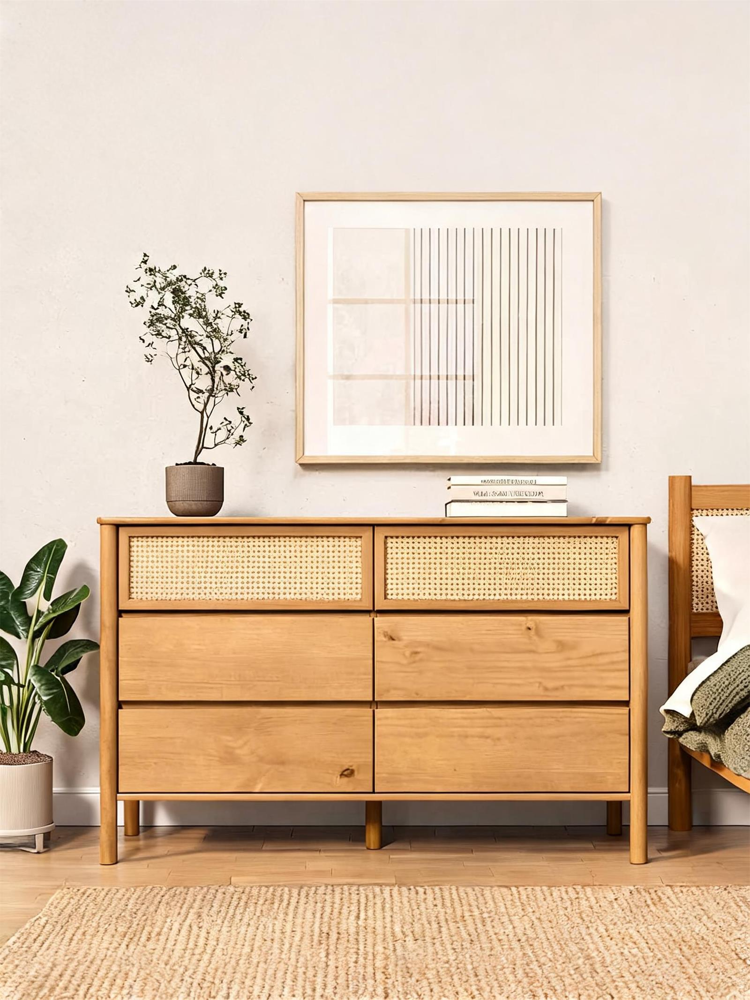

Quarto adulto
Como escolher uma cômoda para quarto adulto
A cômoda é uma peça essencial para organizar o quarto adulto com funcionalidade e beleza. Veja neste guia da IDIMEX como escolher o modelo ideal considerando espaço, quantidade de gavetas, acabamento e rotina de uso.
Escolher uma cômoda para quarto adulto é uma decisão que envolve organização, medidas, estilo e rotina. Mais do que um móvel de apoio, a cômoda ajuda a manter o ambiente funcional, bonito e mais confortável para o dia a dia.
No quarto, cada móvel precisa ter uma função clara. A cama acolhe o descanso, o guarda-roupa concentra as peças maiores e a cômoda facilita o acesso a roupas, acessórios, documentos, itens pessoais e objetos usados com frequência.
Na IDIMEX, as cômodas para quarto adulto são pensadas para unir madeira maciça de pinus, funcionalidade, design e uma experiência de compra mais segura. Antes de escolher, vale observar o espaço disponível, a quantidade de gavetas, o acabamento e a forma como o móvel será usado na rotina.
Por que ter uma cômoda no quarto adulto?
A cômoda é uma solução prática para quem precisa de mais organização sem sobrecarregar o ambiente.
Ela pode ser usada para guardar:
- roupas dobradas;
- peças íntimas;
- acessórios;
- documentos;
- roupas de cama menores;
- objetos pessoais;
- itens de uso diário.
Além disso, a parte superior da cômoda pode servir como apoio para decoração, espelho, luminária, perfumes, bandejas ou objetos afetivos.
Uma boa cômoda ajuda o quarto a ficar mais organizado e visualmente equilibrado.
1. Meça o espaço antes de escolher
Antes de comprar uma cômoda online, o primeiro passo é medir o ambiente.
Confira:
- largura da parede onde o móvel ficará;
- profundidade disponível;
- altura desejada;
- espaço para abrir as gavetas;
- circulação ao redor da cama;
- distância de portas, janelas e tomadas.
Uma cômoda pode ser bonita, mas precisa caber com conforto no quarto. O ideal é que ela organize sem dificultar a circulação.
Em quartos menores, modelos mais compactos podem funcionar melhor. Em quartos amplos ou de casal, cômodas maiores oferecem mais capacidade de armazenamento e presença visual.
2. Escolha a quantidade de gavetas conforme sua rotina
A quantidade de gavetas deve acompanhar o volume de itens que você pretende guardar.
Cômodas com 6 gavetas são boas para quem busca equilíbrio entre espaço interno e proporção visual. Elas ajudam a organizar roupas, acessórios e itens pessoais sem ocupar tanto espaço quanto um móvel muito grande.
Já cômodas com 9 gavetas oferecem maior capacidade e são indicadas para quartos de casal, ambientes amplos ou para quem precisa centralizar mais itens em um só móvel.
Antes de escolher, pense no uso real:
- será uma cômoda individual ou compartilhada?
- vai complementar o guarda-roupa?
- será usada para roupas ou também para objetos?
- o quarto precisa de mais armazenamento?
- o móvel deve ser discreto ou protagonista?
A melhor cômoda é aquela que resolve a rotina sem pesar no ambiente.
3. Observe o acabamento e a cor da madeira
O acabamento influencia diretamente a sensação do quarto.
Cômodas em acabamento freijó ajudam a criar ambientes mais claros, leves e acolhedores. São ideais para composições modernas, naturais e minimalistas.
Acabamentos em castanho trazem mais presença, profundidade e sensação de aconchego. Funcionam bem em quartos com proposta mais marcante, elegante ou clássica.
Tons como mel podem criar uma atmosfera quente, confortável e tradicional, combinando com ambientes que valorizam a naturalidade da madeira.
Na IDIMEX, o acabamento é pensado para valorizar a madeira maciça de pinus e ajudar o cliente a criar um quarto mais bonito, funcional e durável.
4. Avalie o design da cômoda
O design da cômoda precisa conversar com o restante do quarto.
Modelos com linhas retas e acabamento limpo são mais fáceis de combinar com diferentes estilos. Já detalhes como rattan, pés elevados, frentes ripadas ou gavetas com desenho diferenciado ajudam a trazer personalidade ao ambiente.
Se o quarto já possui muitos elementos visuais, uma cômoda mais discreta pode equilibrar a composição. Se o ambiente é mais neutro, uma peça com detalhe marcante pode se tornar o ponto de destaque.
A escolha ideal une beleza, funcionalidade e permanência estética.
5. Pense na funcionalidade do dia a dia
A cômoda precisa facilitar a rotina.
Antes de comprar, imagine o uso diário:
- as gavetas atendem ao volume de roupas?
- a altura é confortável?
- o móvel permite organizar por categorias?
- a superfície superior será usada como apoio?
- o acabamento combina com a limpeza e manutenção do quarto?
- a cômoda será usada por uma ou duas pessoas?
Esse olhar evita escolhas apenas pela aparência e ajuda a encontrar uma peça realmente útil para a casa.
6. Conheça opções de cômodas IDIMEX
Para quem busca uma cômoda funcional, com presença e acabamento mais marcante, a Cômoda Madeira Maciça 6 Gavetas Quarto Adulto Castanho Tecca, da IDIMEX, é uma opção para organizar o quarto com praticidade e sensação de solidez.
A Cômoda 6 Gavetas Quarto Adulto Madeira Rattan com Pés Elevados Freijó Cefira, da IDIMEX, combina madeira, textura e leveza visual, sendo uma boa escolha para quem deseja um quarto adulto mais claro, acolhedor e contemporâneo.
Já a Cômoda Grande para Quarto Casal 9 Gavetas Madeira Maciça Mel Lice, da IDIMEX, é indicada para quem precisa de maior capacidade de armazenamento e deseja uma peça com presença no ambiente.
Essas opções mostram como uma cômoda de madeira maciça de pinus pode atender diferentes estilos, tamanhos de quarto e necessidades de organização.
Conclusão
Escolher uma cômoda para quarto adulto exige atenção ao espaço, à quantidade de gavetas, ao acabamento e à rotina da casa.
Mais do que um móvel para guardar roupas, a cômoda ajuda a construir um quarto mais organizado, bonito e funcional. Quando bem escolhida, ela melhora o uso do ambiente e traz mais praticidade para o dia a dia.
Na IDIMEX, as cômodas de madeira maciça de pinus são desenvolvidas para unir durabilidade, design e confiança na compra online.
Porque um quarto bem planejado não depende apenas de beleza. Ele depende de escolhas que organizam, acolhem e duram.
Perguntas frequentes
Qual o melhor tamanho de cômoda para quarto adulto?
Depende do espaço disponível e da quantidade de itens que você precisa guardar. Antes de comprar, meça a parede, a profundidade disponível e o espaço de abertura das gavetas.
Cômoda com 6 gavetas é suficiente?
Para muitas rotinas, sim. Cômodas com 6 gavetas oferecem bom equilíbrio entre capacidade de armazenamento e proporção visual.
Quando escolher uma cômoda com 9 gavetas?
Uma cômoda com 9 gavetas é indicada para quartos maiores, quartos de casal ou para quem precisa de mais espaço para roupas e objetos.
Qual acabamento escolher para a cômoda?
Freijó cria uma sensação mais leve e contemporânea. Castanho traz presença e aconchego. Mel transmite calor visual e naturalidade.
Vale a pena comprar cômoda online?
Sim, desde que você confira medidas, material, acabamento, imagens, descrição técnica e espaço disponível no ambiente.